〇首次使用
欢迎使用 瀚海文助——USTC LaTeX 学术写作助手！只需几步即可开启 AI 辅助写作。首次使用请按以下流程操作，全程约 3 分钟。
- 获取扩展：从科大云盘下载最新版本（见「3.1 获取扩展文件」）。
- 安装扩展：按浏览器类型加载解压后的
build文件夹（见「3.2 安装与部署」）。 - 获取 API Key：注册科大 LLM 平台，推荐
https://api.llm.ustc.edu.cn（见「3.3 获取 API Key」）。 - 填写 API Key：点扩展「选项」，填入 API Key，点「测试连接」并选择模型后保存。
- 开始写作：打开
latex.ustc.edu.cn项目，点击界面右下角仪表盘即可使用全部 AI 功能。 - 探索功能：想探索更多功能？请见第二部分「2.2 基础功能」和「2.3 进阶功能」
一工具介绍
1.1 工具简介
瀚海文助——USTC LaTeX 学术写作助手 是一款专为USTC Overleaf LaTeX 在线编辑器设计的 AI 辅助写作浏览器扩展（Chrome / Firefox / Edge），面向中国科学技术大学学术社区。针对 LaTeX 学术写作提供智能续写、文本润色、语法修复、自定义任务、文章修改、自定义工具栏动作与自定义域名等功能，帮助研究者在 Overleaf 中无需切换工具即可完成高质量学术写作。
扩展基于 OpenAI 兼容 API，联通科大LLM平台，专为中国科学技术大学优化配置。采用 Manifest V3 标准 + 双内容脚本（Dual Content Script）架构，直接注入 Overleaf 编辑页面，在原生 CodeMirror 6 之上叠加 AI 能力层，实现零侵入式写作增强。
1.2 支持的平台与模型
浏览器平台
Chrome / Edge / Opera（Chromium 内核）、Firefox 128+
Overleaf 站点
overleaf.com、latex.ustc.edu.cn，以及任意自托管实例（设置页添加自定义域名）
模型支持
兼容任何 OpenAI 格式端点。预设 DeepSeek V4 Flash 等主流LLM，使用「测试连接」可自动拉取完整模型列表
二功能特性
2.1 功能一览
| 功能 | 说明 |
|---|---|
| 继续写作 | AI 从光标 / 选中处继续撰写 |
| 写作规范 | 按不同学科适配用语规范，可自定义学科，改进提示词 |
| 文章修改 | 输入修改方向，AI 深度改写（更正式 / 转英文 / 精简等）提升语法、流畅度、学术风格 |
| 英文语法修改 | 自动修改英文文章语法错误并标注差异 |
| LaTeX 语法修改 | 自动抓取日志与源码、修复 LaTeX 语法和编译错误 |
| 自定义任务 | 输入任意指令让 AI 处理内容 |
| 自定义动作 | 创建带自定义提示词的可复用工具栏动作 |
| 自定义域名 | 支持自托管 Overleaf 实例 |
2.2 基础功能
🎛️ 1.仪表盘
仪表盘挂载在 USTC LaTeX 界面右下角，是扩展的主入口，集中承载所有 AI 功能的触发按钮。默认包含继续写作、自定义任务、文章修改、LaTeX 语法修改、英文语法修改、输出模式与设置，点击图标即可打开对应功能面板。
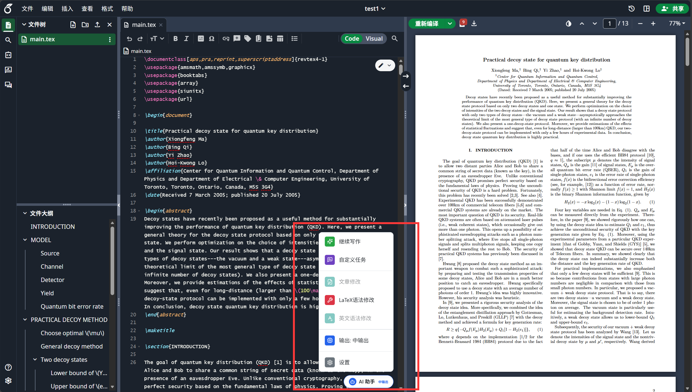
✍️ 2.继续写作
写到一半卡住时，AI 根据光标前 5000 字符上下文生成 3 个风格方案（严谨学术 / 简洁直接 / 详细展开），以可滚动卡片展示，点击「同意」插入。内容自动延续 LaTeX 环境（如 \item）、引用风格（\cite{}）、数学符号和编号惯例。
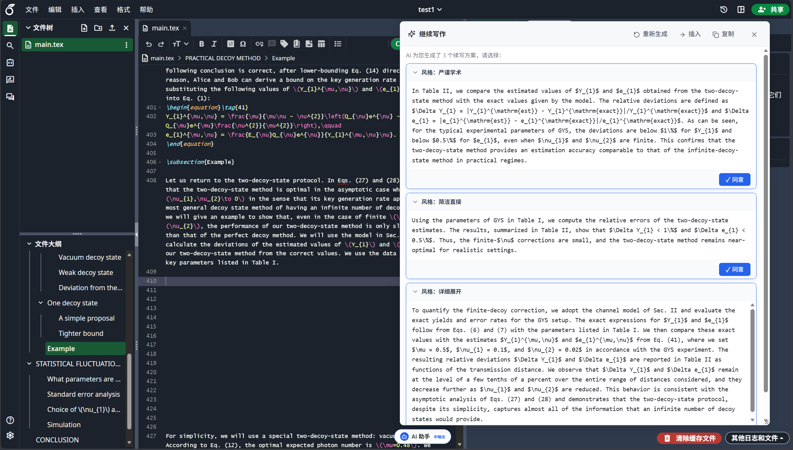
🧩 3.自定义任务
输入任意指令（翻译 / 生成 3×4 表格 / 排版公式），两阶段浮窗（input → output），AI 生成纯 LaTeX 代码，可预览、重新生成、插入或替换。非数学内容（小说、报告、信件）自动包装为合法 LaTeX 结构。
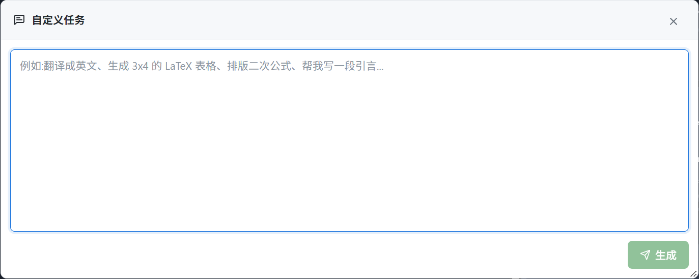
📝 4.文章修改
选中文字后，输入修改方向（如「更正式」/「改英文」/「精简」），AI 读取选区及前后各 2000 字符上下文深度改写，面板预览后一键替换，保留所有 LaTeX 命令与数学公式。
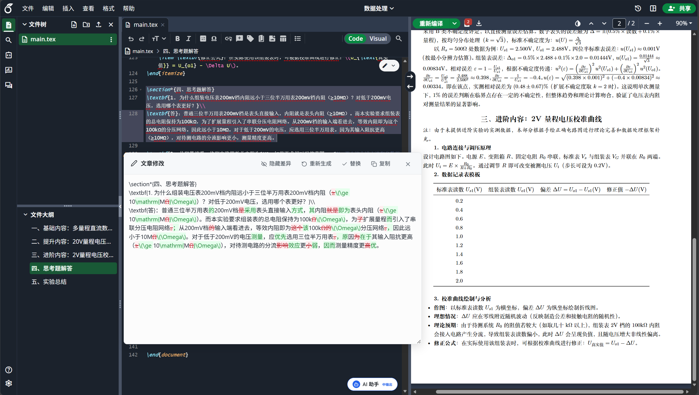
🔧 5.LaTeX 语法修改
LaTeX 编译报错时，点击仪表盘中的LaTeX 语法修改，一键执行全流程：
- 切 XeLaTeX（中文兼容）重新编译
- 抓取日志，将「源码前 8000 字符 + 错误日志」交给 AI
- 弹出修复面板（含来源标签、置信度、问题描述、
查找 → 替换预览） - 勾选后点击「同意全部」批量写回
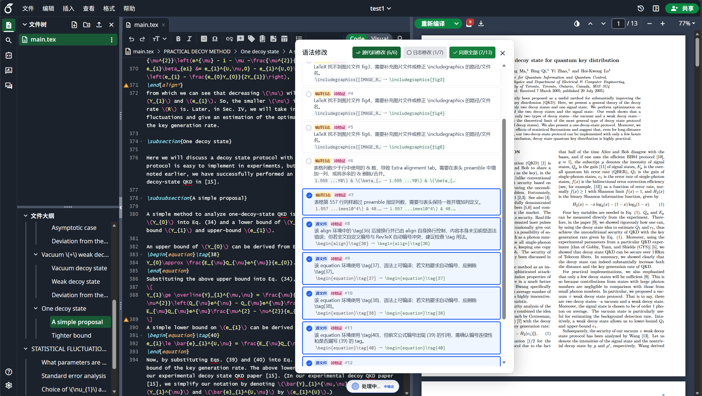
🔤 6.英文语法修改
自动修改英文文章语法错误，逐处标注差异，可预览后一键写回。
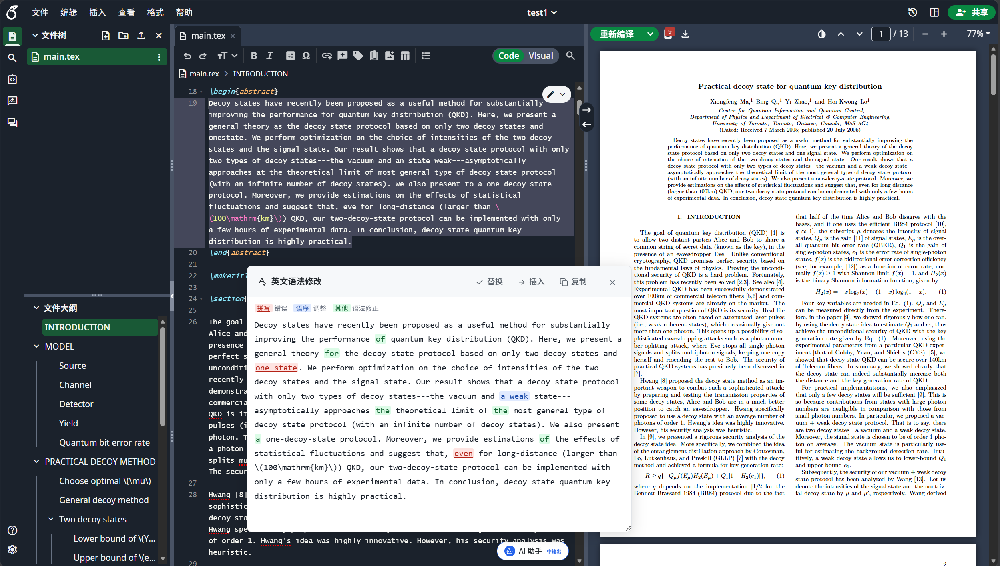
🎚️ 7.三种 AI 输出模式（输出长度倍率）
通过点击仪表盘菜单的“输出：短/中/长输出”循环切换：
续写仅 2 个短方案，响应快
默认模式，平衡速度与质量
续写先深度思考，再出 3 个高质量方案
2.3 进阶功能
🎓 1.写作规范
在设置页可以进行编辑，按不同学科适配用语规范，可自定义学科并改进提示词，使 AI 输出更贴合目标领域的表达习惯。
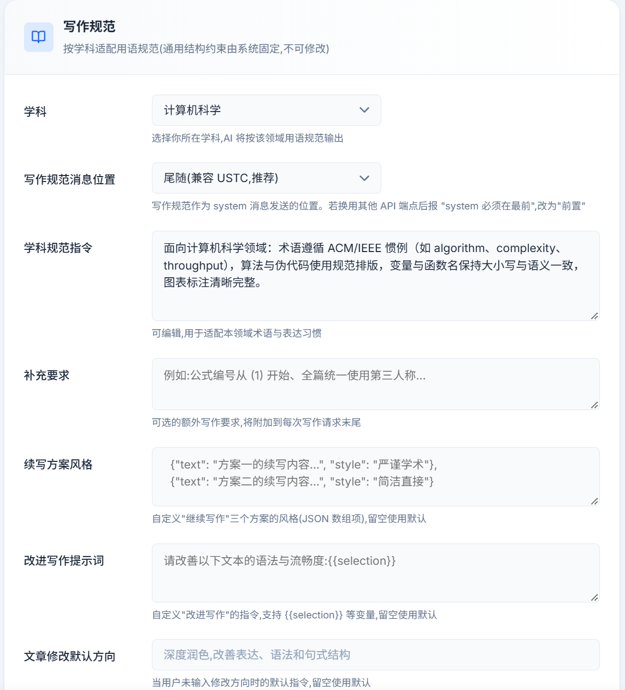
🧩 2.自定义动作
在设置页创建带自定义提示词的可复用工具栏动作，将高频操作沉淀为「一键指令」，无需每次重复输入。每个动作可配置名称、图标（50+ 内置图标）与提示词，保存后选中文本时仪表盘浮动工具栏自动显示对应图标，点击即执行。
提示词支持多种变量占位符与切片语法，便于截取长文档的局部上下文：
| 占位符 | 含义 | 示例 |
|---|---|---|
{{selection}} | 当前选中文本 | 翻译为英文: {{selection}} |
{{before}} | 光标前文本 | {{before[-500:]}} |
{{after}} | 光标后文本 | {{after[:500]}} |
所有提示词会自动被 LaTeX 上下文规则包裹，确保输出为合法 LaTeX，可预览、重新生成、插入或替换。
🌐 3.自定义域名
除内置的 overleaf.com 与 latex.ustc.edu.cn 外，扩展支持任意自托管 Overleaf 实例。在设置页输入自托管地址（如 https://my-overleaf.edu.cn），授权后扩展自动为该域名注册内容脚本；域名列表可随时查看并逐个移除（撤销脚本与主机权限）。
🤖 4.AI 建议
AI 建议提供细粒度的生成控制，可在设置页按需调整：
- 键盘快捷键：录制组合键触发 AI 建议，Backspace 清除，默认 Ctrl+Shift+C。
- 最大输出 Tokens：限制单次响应最大长度，默认 4096。
- 思考 Token 预算：为推理模型预留思维链空间，系统自动调高
max_tokens，默认 0 不启用。
三安装与部署
3.1 获取扩展文件
从科大云盘可以获取工具的最新和以往测试版本：
云盘链接：https://pan.ustc.edu.cn/share/index/b2eef59d1d5f4ea487a2
3.2 Microsoft Edge 部署
- 打开
edge://extensions/，开启左侧 开发人员模式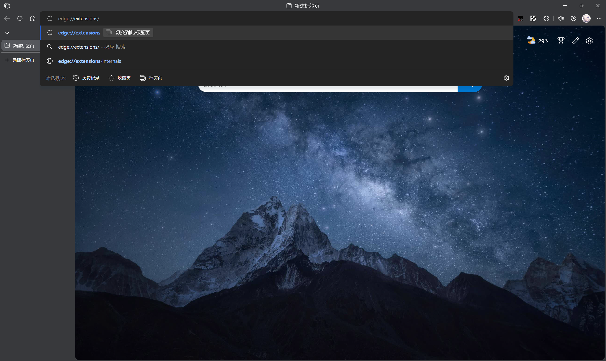
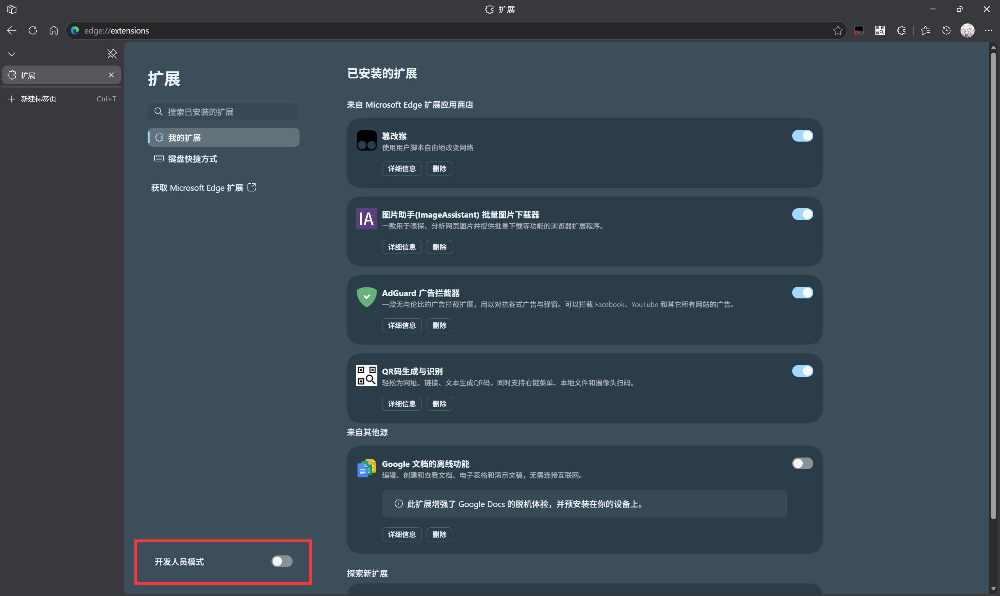
- 点击 「加载解压缩的扩展」，选择
build文件夹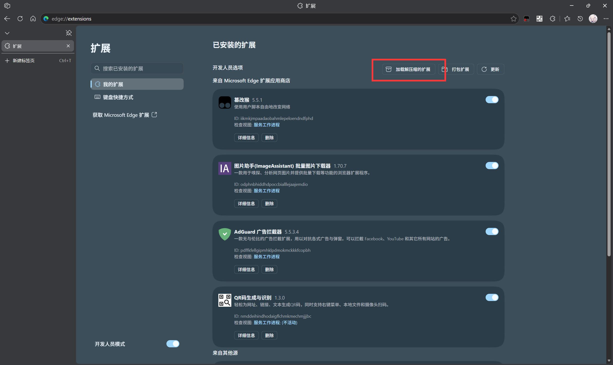
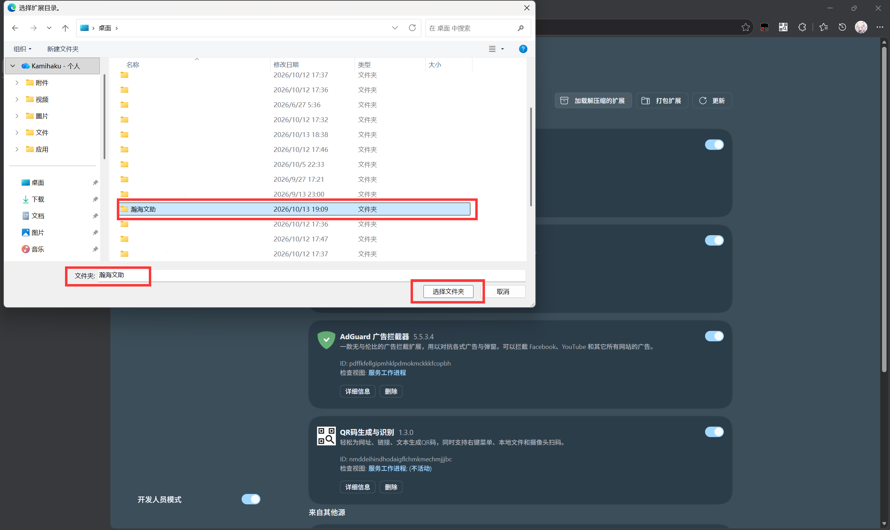
- 打开 https://latex.ustc.edu.cn/ 登录并刷新，看到编辑器右下角出现“AI”助手即安装成功
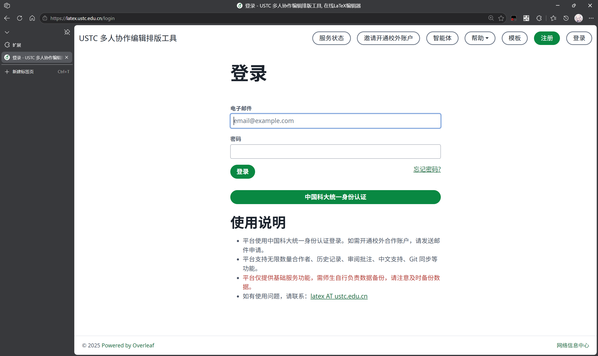
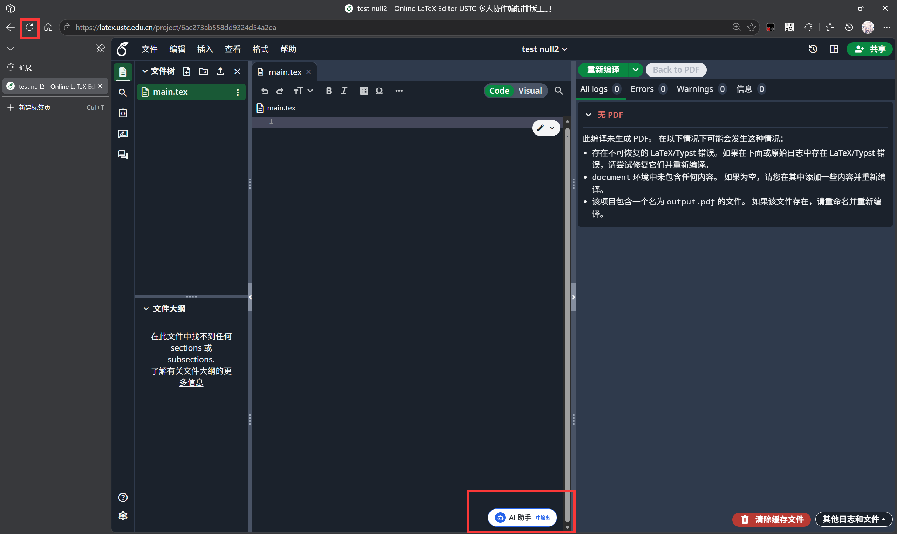
3.3 获取 API Key
本扩展需连接 LLM API，推荐使用科大大模型公共服务平台 https://api.llm.ustc.edu.cn，也兼容任意 OpenAI API。
3.4 添加 API Key
- 打开
overleaf.com或latex.ustc.edu.cn项目 - 点击右下角 AI 助手仪表盘徽标 → 点击设置
- 在设置页找到 API 配置，填入 API Key，点击测试链接获取并选择模型
- 点击保存更改，回到 LaTeX 编辑器页面即可正常使用
四使用方法
4.1 触发方式
| 触发方式 | 操作 | 适用功能 |
|---|---|---|
| 徽章菜单 | 点编辑器右下角 AI 徽章选功能 | 续写、自定义任务、文章修改、语法修改 |
| Tab | 接受内联幽灵建议 | 一键采纳 AI 续写 |
| Ctrl+→ | 逐词接受内联建议 | 精确控制采纳内容 |
| Esc | 取消建议 | 放弃当前建议 |
4.2 键盘快捷键
| 快捷键 | 功能 | 说明 |
|---|---|---|
| Ctrl+Shift+C | AI 建议（续写） | 触发续写候选（可在设置中自定义） |
| Ctrl+Shift+I | 改进写作 | 对选区做语法 / 流畅度 / 学术风格改进（需选中） |
| Ctrl+Shift+T | 自定义任务 | 浮窗输入指令处理选中文本 |
| Ctrl+Shift+E | 文章修改 | 深度修改面板，输入方向改写（需选中） |
| Ctrl+Shift+X | 语法修改 | 触发编译错误检测与 AI 修复 |
| Tab | 接受内联建议 | 整段采纳幽灵续写 |
| Ctrl+→ | 逐词接受 | 按词精确采纳 |
| Esc | 取消 | 关闭浮层 / 放弃建议 |
4.3 快捷键工作流示例
纯键盘续写
- 写作停在想续写处
- Ctrl+Shift+C 触发生成候选
- 浏览后「同意」或 Tab 采纳
- 部分内容用 Ctrl+→ 逐词接受，Esc 取消
纯键盘改进
- Shift+方向键 选中文本
- Ctrl+Shift+I 打开改进面板
- 浮窗预览（可切 diff 视图）
- 点击「替换」写回文档
五隐私政策
最后更新：2026 年 10 月 17 日
5.1 开发者不收集数据
本扩展没有开发者自建服务器，也没有任何遥测、埋点或分析上报。你的一切设置与统计都只保存在本机浏览器中，不会被回传、汇总或用于任何商业用途。
5.2 第三方数据传输
为提供 AI 功能，扩展需读取文本并发送到模型。读取范围与去向下：
| 数据类型 | 何时读取 | 范围 |
|---|---|---|
| 选中文本 | 文章修改 / 语法修改 / 翻译等 | 所选中部分，单次上限约 20000 字符 |
| 光标上下文 | 继续写作 | 光标前后各约 5000 字符 |
| 全文与编译日志 | LaTeX 语法修改 | 整份源文件与编译日志，用于定位错误 |
网络请求去向：
- 所配置的模型端点（默认
https://api.llm.ustc.edu.cn，可改为任意 OpenAI 兼容端点）：文档文本、提示词、API 密钥都会发到这里。 - 科大密钥服务
https://latex.ustc.edu.cn/agent/llm-key：仅在「一键获取密钥」时访问。
\includegraphics、图片 URL、Base64 图片均替换为占位符）。5.3 权限使用说明
扩展申请的每项权限都有明确用途，绝不多要：
| 权限 | 用途 |
|---|---|
storage | 本地保存设置、加密密钥与用量统计 |
cookies | 仅「一键获取密钥」时读取科大 Overleaf 登录态 |
scripting | 为「自定义域名」（自建实例）动态注册内容脚本 |
主机权限 *.overleaf.com、latex.ustc.edu.cn | 在 Overleaf 项目页注入助手界面与编辑器脚本 |
可选 <all_urls> | 仅在你添加自定义域名时才按需申请 |
5.4 数据安全
- API 密钥：以 AES-GCM 加密后存于本机（
chrome.storage.local），加密密钥也是本机随机生成、存在本地，绝不明文、绝不发送给开发者。 - 登录 Cookie：仅当你主动点击「一键获取密钥」时，才读取一次科大 Overleaf 登录态用于换取密钥，平时不会读取。
- 统计与设置：用量统计（Token 数、请求次数）、界面设置、自定义提示词等均只存于本地，不上传。
- 可彻底删除：用量统计可重置；卸载扩展即清除全部本地数据。
5.5 联系与反馈
如有任何相关疑问，欢迎联系本扩展开发小组。内测 QQ 群：1101715467。
六常见问题与故障排除
6.1 故障排除
| 问题 | 解决方案 |
|---|---|
| 无建议 | 检查 API 密钥、测试连接，确保光标前有 50+ 字符 |
| 模型不对 | 点击「测试连接」刷新模型列表 |
| 自定义域名失败 | 检查权限，确保使用 HTTPS |
6.2 部署常见问题
Q：加载后看不到图标？
A：确保打开的是 Overleaf 编辑器页面（URL 含 /project/），而非项目列表页。
Q：AI 返回空响应？
A：检查 API Key / Base URL 是否正确，确保模型名与服务支持一致。
Q：语法修改提示「未返回有效 JSON」？
A：模型可能不支持长文本或流式输出，请更换模型或缩小文档。
Q：Firefox 不生效？
A：需 128+，注意 manifest-firefox.json 有 Firefox 专属配置。
Q：Linux 兼容性？
A：Chrome / Edge / Firefox 的 Linux 版本完全正常，步骤与 Windows / macOS 一致。
6.3 其他浏览器部署
Google Chrome 部署
打开 chrome://extensions/ 开启开发者模式，点击「加载已解压的扩展程序」选择 build 文件夹，扩展图标即出现在工具栏，再到「选项」填入 API Key 即可。
Mozilla Firefox 部署
临时加载（推荐）：打开 about:debugging#/runtime/this-firefox →「临时载入附加组件…」→ 选择 build/manifest-firefox.json，随后在「管理扩展 → 首选项」填入 API Key。注意临时加载的扩展重启后消失。
永久安装：将 manifest-firefox.json 改名为 manifest.json，打包为 .xpi 后拖入 Firefox；或打开 about:addons → 齿轮 →「从文件安装附加组件…」选择该文件。
google-chrome-stable，步骤同 Windows；Edge 可用官网 .deb / .rpm 包。A附录 A · 技术架构
A.1 技术栈全景
| 层级 | 技术 | 选型理由 |
|---|---|---|
| 前端框架 | React 18 | 组件化复杂浮层 UI；createRoot 复用适配反复重渲染 |
| 构建工具 | Vite 5 | 极速冷启动 / HMR；多入口单文件构建适配扩展多脚本 |
| 语言 | TypeScript 5 | 类型安全，types.ts 最小化 CodeMirror 声明，无重量级依赖 |
| 扩展规范 | Chrome MV3 | Service Worker 承载后台，网络请求统一收口 |
| 加密 | Web Crypto (AES-GCM) | 浏览器原生，设备级密钥，无第三方依赖 |
| 文本对比 | fast-diff | 字符级 diff，AI 结果最小化编辑 |
| 图标 | lucide-react | 现代 SVG，体积小、风格统一 |
package.json 保留 markdown-it / dompurify 依赖但源码未实际使用（AI 结果以纯文本 / diff 展示，不做 Markdown 渲染）。A.2 分层架构（双世界架构）
采用双世界（Dual World）架构，是扩展访问页面 JS 内部状态的关键设计，整体分为三层：
- editorMain.ts（主世界） —— 「手脚」：直读 CodeMirror 6 内部对象、读写文档。
- hostPanel.tsx（隔离世界） —— 「大脑 + 脸面」：React 组件、设置管理、AI 调度、浮层生命周期。
- background.ts（Service Worker） —— 网络代理：MV3 要求网络请求走 Service Worker，统一 SSE 转发与中断处理。
事件协议（olx:*）
| 事件 | 方向 | 载荷 | 作用 |
|---|---|---|---|
editor:select | main→iso | {content,from,to,head} | 用户选中文本 |
cursor:update | main→iso | {hasSelection,head} | 光标移动 / 取消选区 |
continue:response | main→iso | {content,head} | 快捷键触发续写，携光标前后文 |
menu:continue | iso→main | {modePrompt} | 菜单点「继续写作」 |
editor:replace | iso→main | {content,from,to} | 替换 [from,to) |
editor:insert | iso→main | {content,pos?} | 指定位置插入 |
editor:applyFixes | iso→main | {fixes:[{searchText,replaceText}]} | 批量查找-替换（语法修复） |
editor:applyEdits | iso→main | {originals,suggestions} | 批量原文-改文应用 |
suggestion:accept | iso→main | — | 接受幽灵续写 |
options:update | iso→main | {options} | 设置变更通知 |
detail 跨世界会被冻结为不可访问的 Xray 对象。lib/cross-context.ts 检测 window.wrappedJSObject 时用 cloneInto 把数据拷到页面 window 随机键（__olx_event_<时间戳>_<随机>），事件只传键名，接收方取后删除；Chrome 直接传对象。A.3 构建系统
- vite.config.ts：
OLX_ENTRY环境变量控制构建入口（四个：editorMain / hostPanel / background / options）；entryFileNames强制产物名与 manifest 一致；inlineDynamicImports:true打进单文件；emptyOutDir:false多入口往同一build/追加。 - scripts/build.mjs：清空
build/→ 拷public/→ 循环四个入口各调一次vite build。 - scripts/pack.mjs：archiver 压 zip；
--chrome用 manifest.json 产 .zip，--firefox替换 manifest 产 .xpi。 - public/manifest.json：两个 content script（editorMain→MAIN 世界、hostPanel→隔离世界）匹配
<overleaf 域>/project/*；background.service_worker；host_permissions仅*://*.overleaf.com/*与*://latex.ustc.edu.cn/*；optional_host_permissions:<all_urls>支持动态授权；CSPconnect-src 'self' https:。
A.4 技术亮点
- 双世界架构：利用 MAIN / Isolated 双脚本机制突破内容脚本无法访问页面 JS 的限制，深度集成 CodeMirror 6。
- SSE 流式管线：background → React 完整流式管线，实时逐字生成。
- 最小化 diff 编辑：fast-diff 转最小编辑操作，只改差异位置，避免光标跳动与撤销历史污染。
- 多方案续写：一次返回 2~3 候选（短 2、中 / 长 3），择优采纳。
- Web Crypto 加密：AES-GCM 设备级密钥绑定，无第三方库。
- 跨浏览器：cloneInto / wrappedJSObject 兼容 Firefox Xray，一份代码支持三浏览器。
- 零侵入：浮层叠加，卸载即恢复。
- 全快捷键覆盖：核心 AI 功能均可键鼠全流程操作。
- 多入口单文件 + 自托管域名：
optional_host_permissions+scripting.registerContentScripts动态授权任意自托管实例。
A.5 思考 / 推理模型兼容
对 Qwen-Reasoner、DeepSeek Reasoner / R1、OpenAI o1 / o3、Claude、Gemini 等兼容：
- SSE 层分离：
delta.content（正文）与delta.reasoning_content/reasoning（思考 token）分别读取，思考以kind:'reasoning'独立中继，绝不混入正文。 - 消费方丢弃思考：各流式消费方只取 content，显式跳过 reasoning，避免污染文档。
- Token 预算预留：
tokens.ts识别 reasoner / thinking 系模型，额外预留max_tokens，保证正文完整输出。
B附录 B · 开发人员名单
开发小组成员
负责内容：测试和部分修改。
技术支持：请联系开发小组成员 / 在 GitLab Issues 中反馈问题。
USTC Overleaf LaTeX Agent v1.0.7 · 为中国科学技术大学学术社区打造